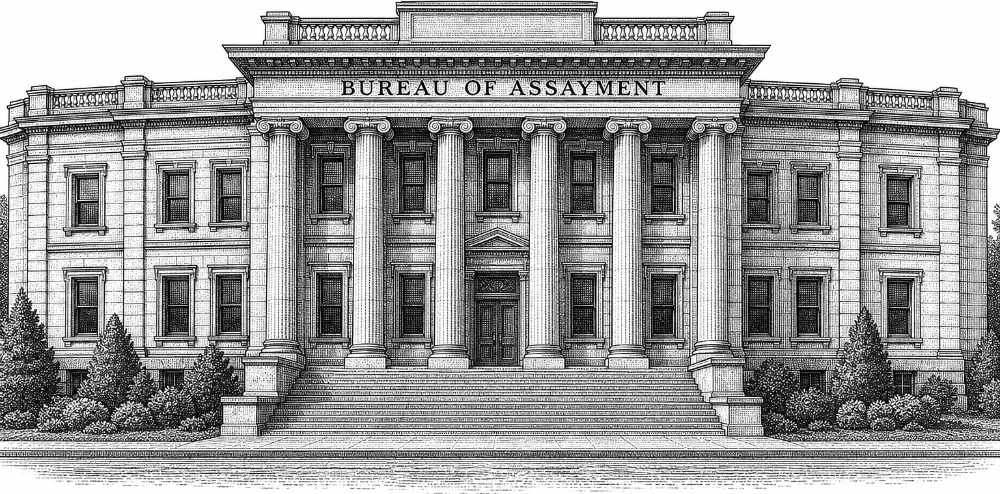
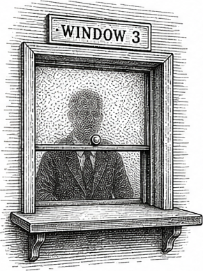
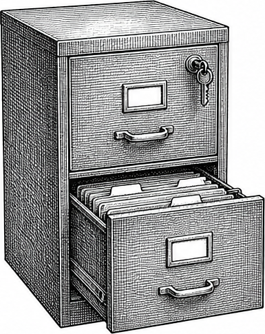
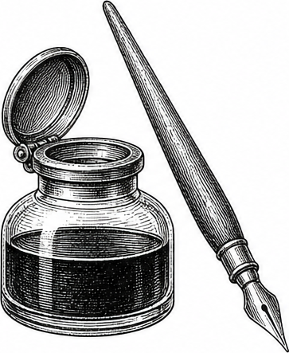
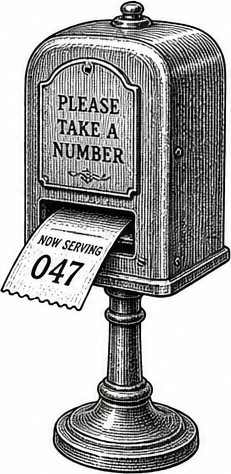
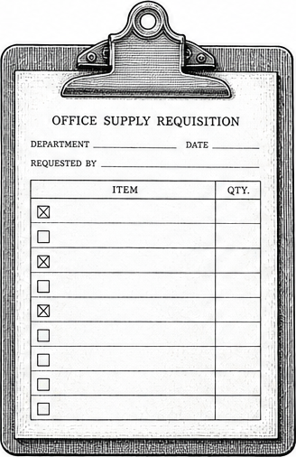
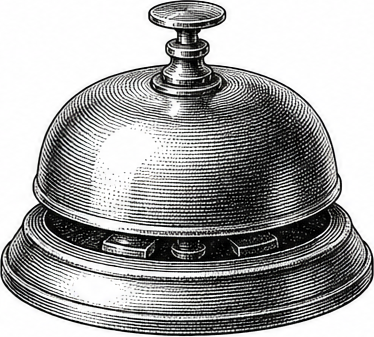
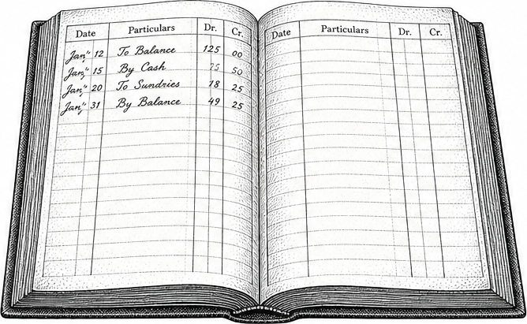
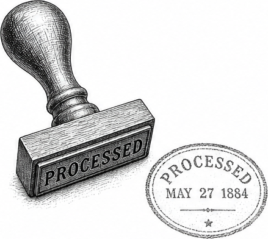

Bureau of Assayment

The Bureau of Assayment processes every paper in the WG21 mailing as it is published. Your submission was received, cataloged, divided into sections, inspected under six categories, challenged on five grounds, and assessed. The report you are reading is the result. The Bureau does not have opinions about your paper. It has procedures, and the procedures were followed.
The Office

Every organization that reviews enough documents eventually builds an office to read them. Not to judge them - judgment is above the Bureau's remit - but to determine whether the claims inside are supported by the evidence provided. This is a narrower question than it appears, and it takes considerably longer than anyone anticipated when the office was established. The Bureau inspects submissions under six categories: Performance, Design, Specification, Usability, Ecosystem, and Rationale. A paper that passes every inspection is not necessarily good. A paper that fails several is not necessarily bad. The Bureau files what it finds. Interpretation is someone else's department.
The Process
Your paper was processed in two stages.
Intake
Your paper entered at the intake window. It was verified against the archive and assigned a case number. A clerk scanned every citation, cross-referenced each one against the archive, and flagged stale editions. Referenced papers that were on file were retrieved, sectioned, indexed, and placed in the case folder. Your paper was then divided into sections and surveyed. If it consisted primarily of specification wording or was a reference document with no structural claims, processing would have ended here. Most papers continue.

Each section was read twice, independently. The first reading extracted every item of structural interest - claims, evidence, concessions, questions, dependencies, scope statements, and any explicit asks of the committee - each recorded with its exact text and line number. The second reading inspected each section for gaps: claims without evidence, design choices without rationale, performance assertions without benchmarks, comparisons without data. Each gap was recorded as a deficiency notice, tagged by category and severity.

The forms were collated. Duplicates were absorbed. A senior clerk reviewed the complete file and produced a one-sentence case summary: what the paper argues, what problem it addresses, what it covers and what it does not, and which claims are load-bearing - meaning their retraction would collapse the thesis. Deficiency notices filed during intake were re-evaluated against the summary. A gap that touches the central thesis was upgraded to critical. The file went upstairs.
Review

A reviewer received your file with the case summary attached. For each of the six inspection categories, a research request was sent out - three searches maximum per category, closed early if the first two returned nothing relevant. Only findings connecting to your paper's thesis were retained. The Bureau does not collect information recreationally.

The citation file from intake was compared against extraction annotations. Discrepancies were noted. Each section of your paper was then examined against the case summary, deficiency notices from other sections, research findings, and twenty-five standard test patterns covering the range of structural concerns a committee reviewer might raise. A separate compliance checklist was run: five items derived from SD-4 guidelines, each marked pass or fail with a location and a note. Then the findings went to the appeals desk.
Appeals
Not everything that was filed deserved to be filed. The appeals desk exists to strike findings that should not have survived this far. Five grounds, applied in order. A finding struck at any ground does not proceed to the next.
Does the paper already concede the point? If the author named the limitation openly, the finding restates what the paper already said. Struck. Does the paper actually claim what the finding attacks? If the finding targets an inference rather than a statement, it attacks a phantom. Struck. Does the paper's own text resolve the concern? If the answer is in the paper - even in another section, even implicitly - the finding failed to read the submission. Struck. Would a real committee member raise this? If only exhaustive mechanical analysis could have produced the finding, it models a threat that does not exist in a room full of humans. Struck. Is the finding structural? If it is editorial, formatting, or stylistic, it does not belong in a structural assessment. Struck.

The report records how many findings were generated, how many survived, how many were struck, and which ground struck them. The ratio is part of the record.

After appeals, surviving findings were reviewed together. Some findings combine. A missing benchmark in one section and an unjustified design choice in another may, together, produce a risk that neither finding captures alone. These compound dynamics are identified, named, and described in the report. When they exist, one is designated the dominant dynamic.
The Three Determinations
Your paper received one of three determinations. Sound means the thesis survives and findings, if any, do not undermine it. The paperwork is in order. Weakened means the thesis survives but surviving findings weaken the structural support; specific sections need reinforcement. Undermined means the thesis does not survive the examination; the structural support is insufficient and the submission requires substantial revision.
Three minor findings in the periphery do not weaken a paper whose thesis is sound. Zero findings do not strengthen a paper whose thesis is unsupported. The Bureau weighs the structure, not the count.
The Report
The report delivers the determination first. A reader who must process twenty findings before learning the outcome has been subjected to a processing delay, not an assessment. After the determination: the asks the paper makes of the committee, the structural assessment, any compound dynamics, major findings in order of severity, regular findings, strengths, the rationale checklist, the reference table, and the complete inventory of what was extracted, filed, challenged, and survived.

The Bureau would prefer to file nothing. An empty findings section means the claims were supported, the design choices justified, the citations verified, and the rationale complete. That is not a formality. It is the outcome that makes every actual finding honest. A reviewer who expects to find deficiencies in every submission has stopped reviewing and started processing a foregone conclusion. The Bureau does not process foregone conclusions. It processes papers.